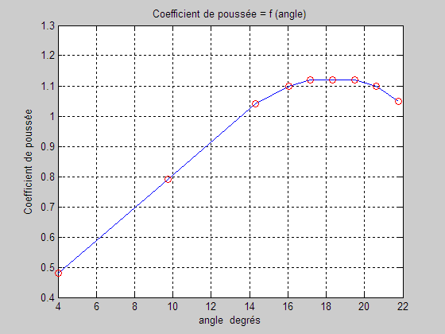

ForHelice.m
clear; close all; Matrice = load('Helice.dat'); Angle = Matrice(:,1); Coefficient = Matrice(:,2); for i = 1:length(Angle) Angle(i) = Angle(i)*180/pi; end
plot(Angle,Coefficient,'-b'); hold on; % Permet de tracer sur la même figure. plot(Angle,Coefficient,'or'); grid on; xlabel('angle degrés'); ylabel('Coefficient de poussée'); title('Coefficient de poussée = f (angle)');
